| 빌드 | 시작 다음 이전 |
| 시나리오 파일 별로 논리적으로 그려진 시나리오의 아이템 속성을 읽어서 결과 파일을 만들어 냅니다. 결과 파일은 시나리오 파일 별로 ".ssfx"는 ".fxml"이 ".msfx"는 ".mxml" 이 생성 되며, 프로젝트 빌드를 한 경우는 각 시나리오 파일을 컴파일 한 파일이 합쳐져 ".SXML" 이 생성 되며, SLEE 에서 서비스 시나리오 단위가 됩니다.
빌드 설정
· 리본 메뉴 Build > Configuration > Build Settings 메뉴를 누르면 빌드 설정 창이 팝업 됩니다.
Build File Tab
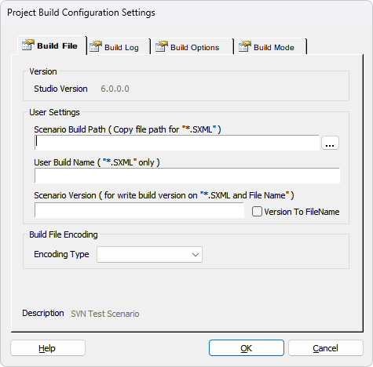
Date & Version Scenario Date : 프로젝트가 빌드된 시점의 프로젝트의 날자 및 시간 이며, ".SXML" 의 "<sxml" 태그에 기록 됩니다.(파일 하나 컴파일 시에는 변경없음) Studio Version : ForCusStudio(SCE) 의 버전이며, ".SXML" 의 "<sxml" 태그에 기록 됩니다.
User Settings Scenario Build path : 경로를 지정하면 빌드 완료된 ".SXML" 이 "\sxml\" 폴더에서 여기로 복사 되며, 경로가 잘못된 경우 Build 결과 창에 Warning 이 출력 됩니다. User Build Name : 프로젝트 이름 + ".SXML" 대신 여기에 입력한 이름으로 결과 파일이 생성됩니다.( 이름 + ".SXML" ) Scenario Version : ".SXML" 의 버전을 입력 하며, 입력하지 않아도 됩니다.( ".SXML" 의 버전 관리를 위해 사용되며, ".SXML" 의 "<sxml" 태그에 기록 됩니다 ) Version To FileName Check Box : Scenario Version이 빌드된 파일에도 적용됩니다.( 이름 + Scenario Version )
Build File Encoding
Build File Encoding Combo Box : 빌드 출력 파일(SXML)의 파일 타입 지정 아무것도 지정하지 않은 기본은 ANSI, UTF-8, Unicode지정 가능
Description : 프로젝트의 설명을 표시합니다.(설정은 Project Configuration Settings 에서 하며 ".SXML" 의 "<sxml" 태그에 기록 됩니다)
Build Log Tab
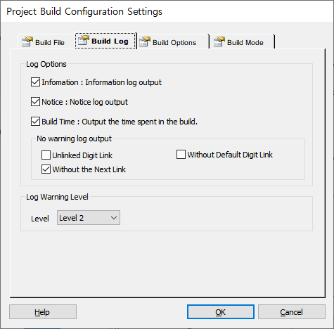
Log Options Information Check Box : Information log output, 정보성 로그 출력 여부 Notice Check Box : Notice log output, 알림성 로그 출력 여부 Build Time Check Box : Output the time spent in the build, 빌드 완료 후 빌드 경과 시간 출력 여부 No warning log output : 경고 로그를 추력하지 않는 설정 Unlinked Digit Link : GetDigit 아이템 디지트 링크에서 링크하지 않은 디지트가 있어도 경고 로그 출력 안 함 Without Default Digit Link : GetDigit 아이템 디지트 링크에서 Default 링크를 하지 않아도 경고 로그 출력 안 함 Without the Next Link : GetDigit 아이템 Next 링크가 없어도 경고 로그 출력 안 함
Log Warning Level Level : 경고로그 출력 레벨
Build Options Tab
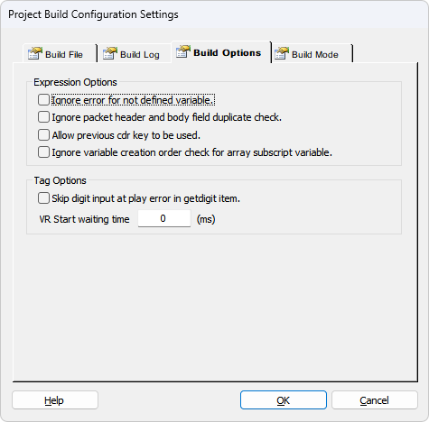
Expression Options \Ignore error for not defined variable Check Box :선언되지 않은 변수에 대한 에러 무시 Ignore packet header and body field duplicate Check Box :전문 헤더와 바디의 필드 중복 에러 무시.(DefinePacket 선언 시 헤더와 바디가 다른 아이템에 선언 되었을 때 해당함.) Allow previous cdr key to be used Check Box : 이전 CDR키 사용 허용
Tag Options
Skip digit input at play error in getdigit item Check Box : GetDigit 아이템에서 Ment Play에러 시에 이후 Ment 및 getdigit 또는 collectdigit 처리를 하지 않고 다음 아이템으로 진행.(Play Error에 대한 처리가 필요한 경우에는 "Error" 이벤트 링크 사용) VR Start waiting time : voicerecognizestart 태그 전에 태그 시작 대기 시간 설정, VR 엔진 시작 대기 시간이 있는 경우 사용하여 VR 엔진 오류발생을 방지한다.
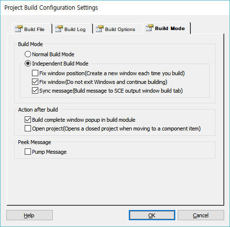
Build Mode Normal Build Mode Radio Button : 기본 빌드 모드, SCE와 빌드 메시지를 연동하고 빌드 하는동안 SCE 편집화면 및 메뉴가 잠긴다.
Independent Build Mode Radio Button : 독립 빌드 모드, SCE 편집화면 및 메뉴가 잠기지 않는다.
Fix window position(Create a new window each time you build) Check Box : 독립 빌드모드 창이 마지막 종료위치에 팝업되며 빌드 시 마다 이전 창은 종료되고 새 창이 생성된다. Fix window(Do not exit Windows and continue building) Check Box : 독립 빌드모드 창이 사용자가 종료하기 전까지 종료되지 않으며 빌드 창에서 계속 빌드처리 할 수 있다. Sync message(Build message to SCE output window build tab) Check Box : 기본 적으로 독립 빌드모드 창에 빌드 메시지가 출력되나 이 메시지를 SCE 빌드 창에도 출력하게 한다.
* Fix window position 과 Fix window 옵션은 동시에 선택 될 수 없다.
Action after build Build complete window popup in build module Check Box : 빌드 완료 창을 빌드 모듈에서 팝업
Open project(Opens a closed project when moving to a component item) Check Box : 독립빌드 창에는 다른 프로젝트를 오픈하여 빌드 할 수 있는 기능이 있어서 SCE에서 솔루션에는 있으나 오픈하지 않은 프로젝트를 오픈하여 빌드 후 빌드에러 메시지를 더블클릭 시 SCE에서 오픈되지 않은 프로젝트를 오픈하고 해당 파일 및 아이템의 편집화면으로 이동한다.(단, 독립빌드 창에서 오픈한 프로젝트의 IID DB 데이터가 있어야 한다). 그리고, 솔루션에 없는 프로젝트를 오픈하고 빌드 할 수 도 있는데 이때는 빌드에러 메시지를 더블클릭해도 이동하지 못한다.
Peek Message Pump Message Check Box : 빌드 쓰레드 처리 중 다른 윈도우 메시지 전달(빌드 중 다른 윈도우 작업 처리)
♣ ".SXML" 파일의 "<sxml" 태그 내용 예제
<sxml version="1.1" name="IR_TEST" ip="100.100.100.1" studioversion="5.0.0.1" description="IR v3 블록시험 시나리오" date="20171012144315" scenarioversion="" build="119"> 예제에서 name 은 프로젝트 이름이고, ip 는 현재 편집 중인 pc 의 ip 이며, build 는 ".SXML" 파일이 생성된 후 삭제 되지 않고 빌드된 횟수 입니다.
· 리본 메뉴 Home > Project Build 에서는 프로젝트 빌드와 시나리오 파일 컴파일을 할수 있으며, 리본 메뉴 Build 에서는 솔루션 빌드 및 프로젝트 빌드, 시나리오 컴파일을 할 수 있습니다.
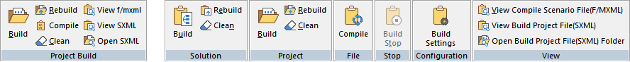
Build : 컴파일 된 시나리오 파일은 다시 컴파일 하지 않으며, 컴파일 된 모든 파일(.fxml, .mxml)을 Join 하여 ".SXML" 파일을 만듭니다.
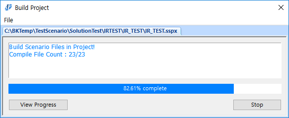
Rebuild : 모든 시나리오 파일을 재 컴파일 하며, ".SXML" 파일을 만듭니다.
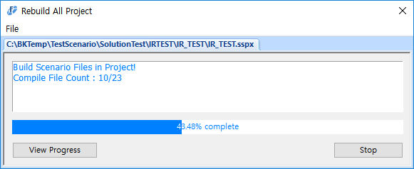
Compile : 시나리오 파일 하나에 대해서만 처리 합니다.( ".SXML 파일을 만들지 않음 )
Clean : 컴파일된 파일(*.fxml, *.mxml, .SXML)을 모두 삭제 합니다.
Solution Build : 솔루션에 소속된 프로젝트 모두를 대상으로 빌드를 하는데 오픈된 프로젝트에 한하여 처리합니다. Solution Rebuild : 솔루션에 소속된 프로젝트 모두를 대상으로 재 빌드를 하는데 오픈된 프로젝트에 한하여 처리합니다.
Solution Celan : 솔루션에 소속된 프로젝트 모두의 빌드 정보를 초기화 하는데 오픈된 프로젝트에 한하여 처리합니다.
컴파일된 파일 보기
View Build Project File : 리본메뉴 Home > Project Build > View SXML 또는 리본메뉴 Build > View > View Build Project File(SXML) 에서 해당 메뉴를 누르면 볼수 있으며, 현재 오픈된 프로젝트의 빌드된 ".SXML" 파일이 있는 경우 텍스트 편집기에 내용을 표시 합니다.(기본 Notepad) View Compile Scenario File : 리본메뉴 Home > Project Build > View F/MXML 또는 리본메뉴 Build > View > View Compile Scenario File(F/'MXML)) 에서 해당 메뉴를 누르면 볼수 있으며, 현재 편집 중인 시나리오의 컴파일된 파일(.fxml, .mxml)이 있는 경우 텍스트 편집기에 내용을 표시 합니다. Open Build Project File : 빌드된 SXML 파일이 있는 폴더를 윈도우 탐색기로 열고 파일을 선택하여 줍니다.
빌드 결과
· 결과 파일인 ".fxml", ".mxml", ".SXML" 파일은 프로젝트 폴더 하위에 "\sxml\" 이라는 폴더에 생성 됩니다.
· 파일 하나를 컴파일 한 경우는 Output 창 Build 탭에만 생성된 파일(.fxml, .mxml)의 경로가 표시됩니다.
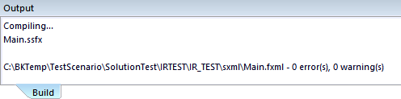
· Build Project 나 Rebuild All 한 경우는 ".SXML" 의 경로가 표시되고, 빌드 정보의 Scenario Build Path 에 경로가 지정되어 있다면 복사된 경로도 표시되어 창이 팝업 됩니다.
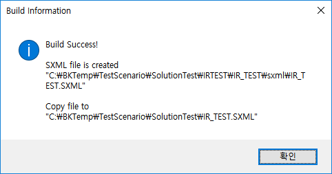
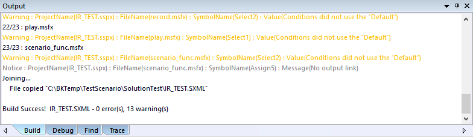
· Compiling... 은 시나리오 파일을 컴파일 하여 ".fxml", ".mxml" 파일로 만드는 과정 입니다. · Joining... 은 Build Project 나 Rebuild All 한 경우 ".fxml", ".mxml" 파일을 ".SXML" 파일로 합치는 과정 입니다. · Build Project 나 Rebuild All 한 경우 빌드 정보의 Scenario Build Path 에 경로가 지정되어 있다면 복사된 경로가 표시되며, 경로가 잘못된 경우는 Warning 이 표시 됩니다. · 빌드중에 에러가 발생되는 경우는 4 가지 에러 메시지가 표시 됩니다.
Properties : 아이템 속성의 값이 없는 경우 또는 연결 카운트가 잘못된 경우 Expression : If, Select 등의 조건식 표현에서 조건 표현이 잘못된 경우 Validation : 사용할 수 없는 변수나, 함수 등을 사용한 경우 Unknown : 정의 되지 않은 알수 없는 오류
· 발생된 에러에 마우스 더블클릭을 하면 발생된 아이템으로 이동합니다.
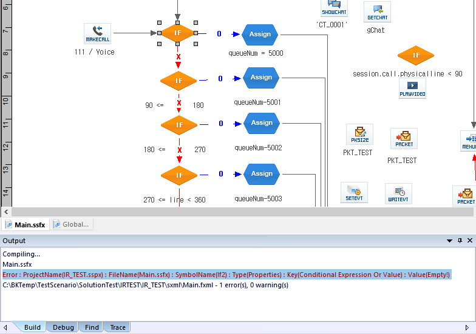
SCE에서 빌드 시에 사용자에 의한 빌드 예외사항을 방지하고자 화면을 잠그게 되는데, 이때, 사용자는 SCE를 사용하지 못하게 된다. 작은 시나리오는 처리시간이 짧기 때문에 괜찮으나 큰 시나리오 경우 5분 이상, 10분 이상 소요되어 SCE작업을 그 시간 동안 하지 못하게 된다. 그리하여 SCE 작업과는 독립적으로 빌드를 처리 하게 하여 빌드 하는 동안 SCE 작업을 할 수 있도록 독립 빌드 모듈을 제공한다.
주의 사항 : 독립 빌드 모듈은 빌드 처리를 처리 함에 있어서 SCE와 별개 지만 SCE가 오픈한 시나리오를 같이 공유하는 경우에는 빌드 중 SCE에서 파일을 변경 저장 할 경우 변경된 파일이 같이 빌드 되거나 안될 수 있으므로 유의 한다.
빌드모드에서 독립 빌드 모드를 선택하고 빌드하면 아래 그림과 같은 창이 팝업 되면서 빌드를 한다.
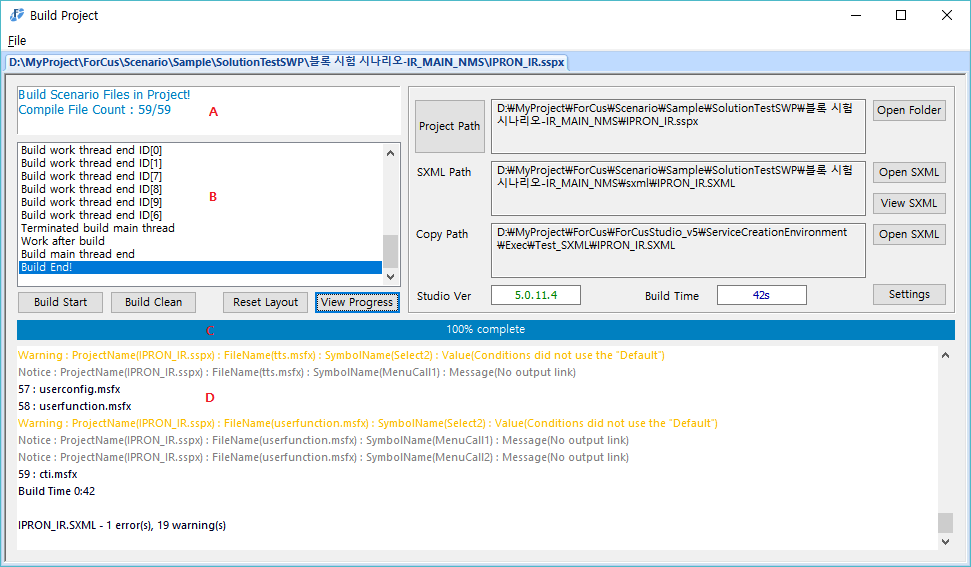
위 창에서 보면 타이틀이 "Build Project" 인데 SCE 메뉴에서 Build를 누른 경우이며, 빌드 안된 파일만 빌드 처리한다. Rebuild를 누른 경우면 창 타이틀이 "Rebuild All Project" 이며 "Build Start" 버튼을 누르면 항상 Rebuild로 처리한다.
A : 빌드 파일 카운트 창 B : 내부 처리 로그 창 C : 빌드 진행 바 D : 빌드 로그 창
Build Start(Stop) Button : 빌드를 시작 또는 중지 합니다. 빌드 창의 타이틀이 'Build Project" 일 경우 빌드 안된 파일만 빌드 하고, "Rebuild All Project" 일 경우는 항상 Build Clean을 하고 전체 빌드를 한다
Build Clean Button : 빌드를 초기화 합니다. 시나리오 파일 개별 빌드 파일(*.fxml, *mxml) 및 빌드 완료 파일을 삭제 합니다.
Reset Layout Button: 빌드 창 화면 구성을 초기화 합니다.
View Progress Button : 숨겨진 쓰레드별 파일 처리 카운트 및 아이템 처리 진행바를 보입니다.
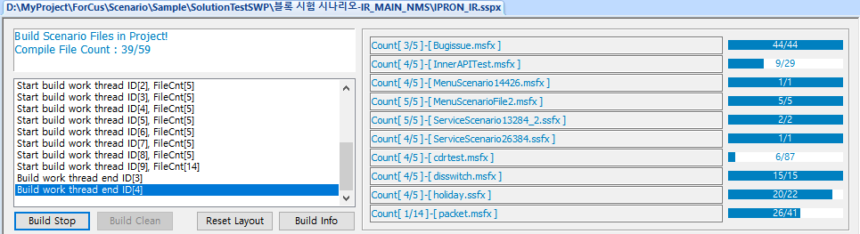
Project Path Button : 다른 프로젝트 파일을 오픈하여 빌드 할 수 있습니다. Open Folder Button(Project Path) : 윈도우 탐색기를 실행하고 프로젝트 디렉토리로 이동합니다.
Open SXML Button(SXML Path) : 윈도우 탐색기를 실행하고 빌드 파일 디렉토리로 이동합니다. View SXML Button : 설정된 에디터 툴로 빌드 파일을 오픈합니다.(기본은 Notepad)
Open SXML Button(Copy Path) : 윈도우 탐색기를 실행하고 빌드 파일 복사 디렉토리로 이동합니다.
Settings Button(Copy Path) : 빌드 옵션 창을 팝업합니다.
|
| Copyrights(C) Bridgetec.co.kr. All Rights Reserved | 시작 다음 이전 |